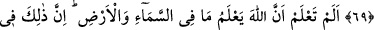
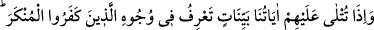

GÖKLERDE VE YERDE
NE VARSA
HEPSİ O’NUNDUR
63. Görmedin mi, Allah, gökten yağmur indirdi de bu sayede yeryüzü yeşeriyor.
Gerçekten Allah çok lütufkârdır, (her şeyden) haberdardır.
64. Göklerde ve yerde ne varsa O’nundur. Hakikaten Allah, yalnız O zengindir,
övgüye değerdir.
65. Görmedin mi, Allah, yerdeki eşyayı ve emri uyarınca denizde yüzen gemileri
sizin hizmetinize verdi. Göğü de, kendi izni olmadıkça yer üzerine düşmekten
korur. Çünkü Allah, insanlara çok şefkatli ve çok merhametlidir.
66. O, (önce) size hayat veren, sonra sizi öldürecek, sonra yine diriltecek olandır.
Gerçekten insan, çok nankördür.
67. Biz, her ümmete, uygulamakta oldukları bir ibadet tarzı gösterdik. Öyle ise